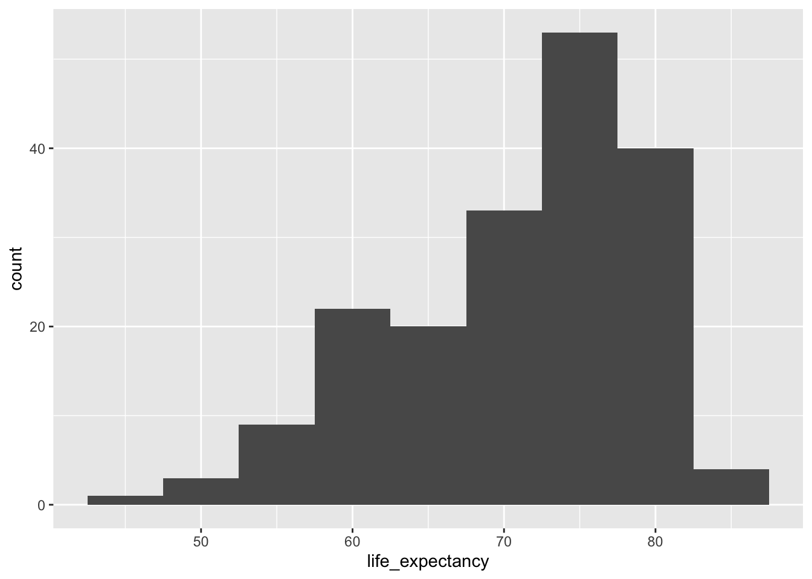
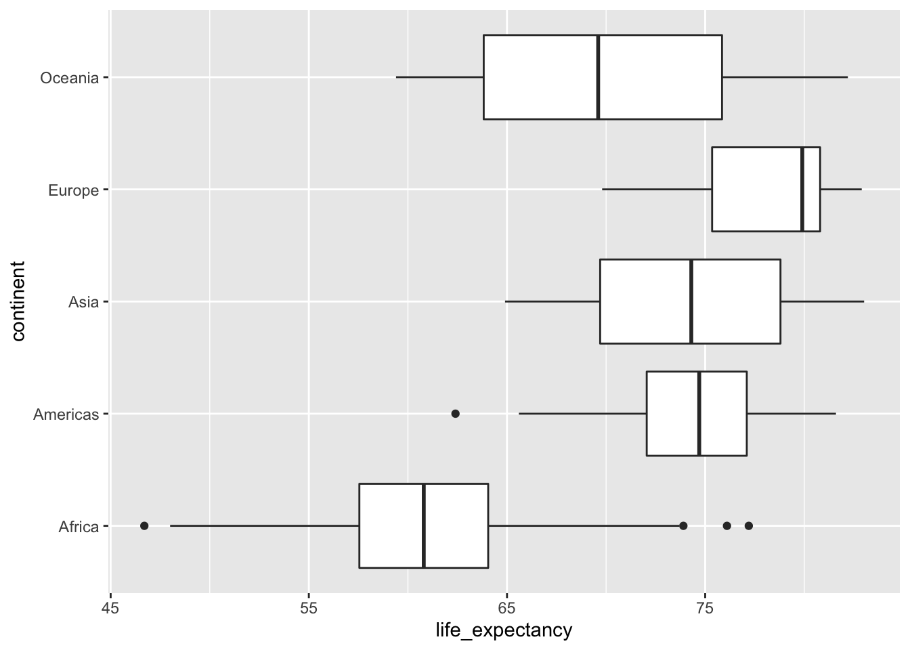
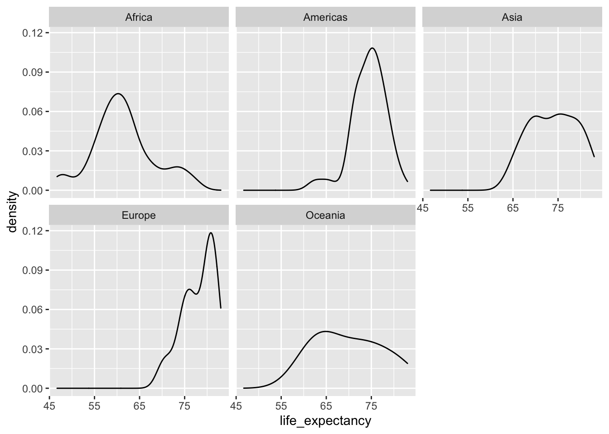
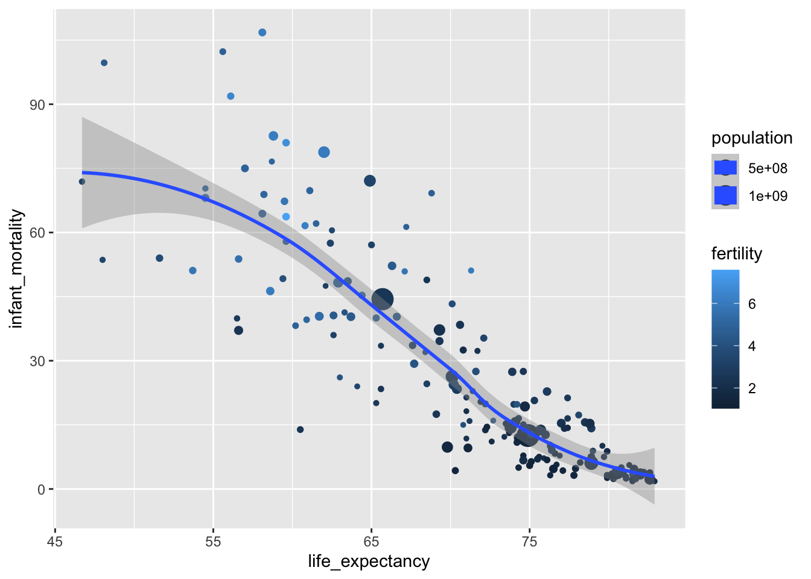
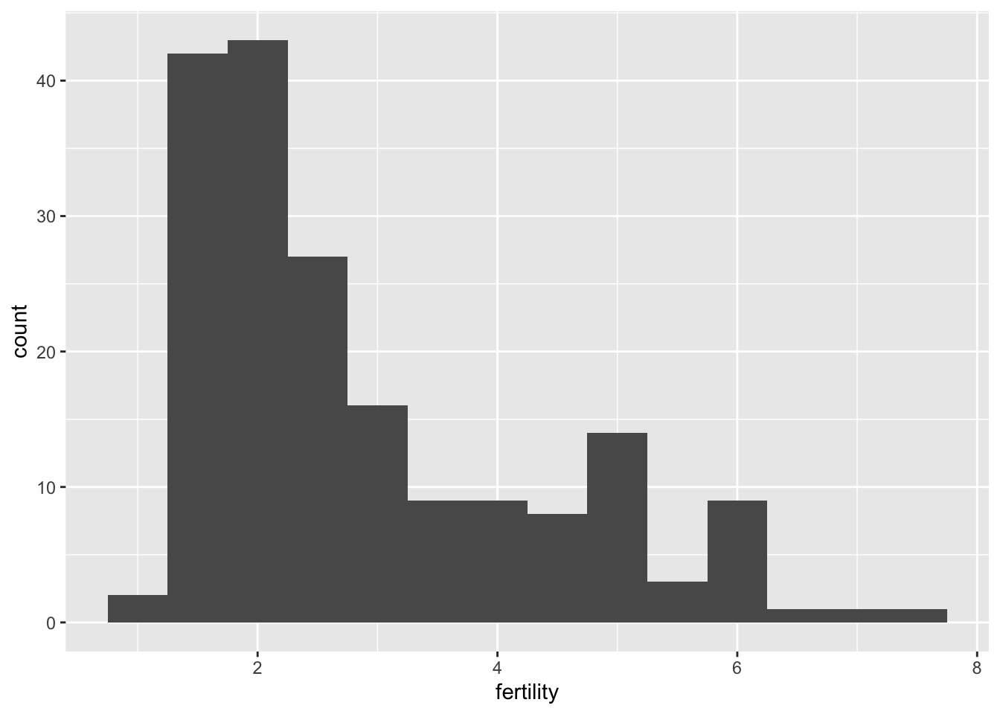
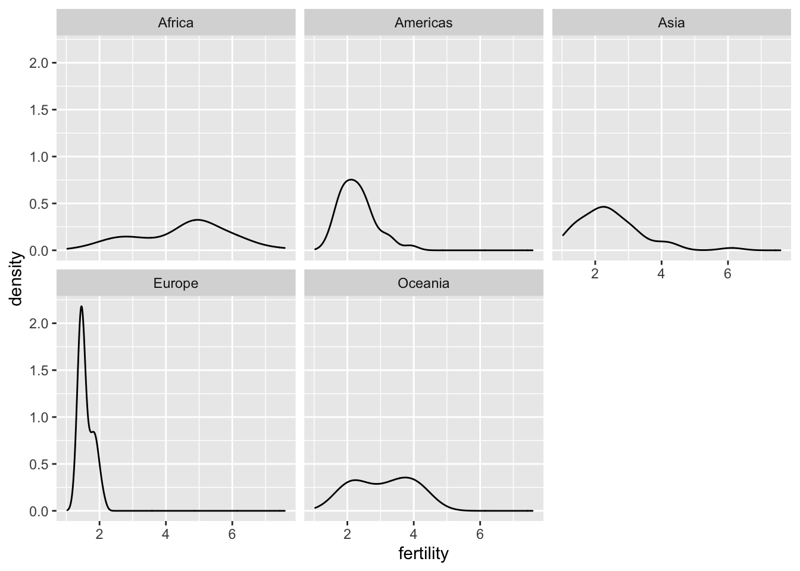
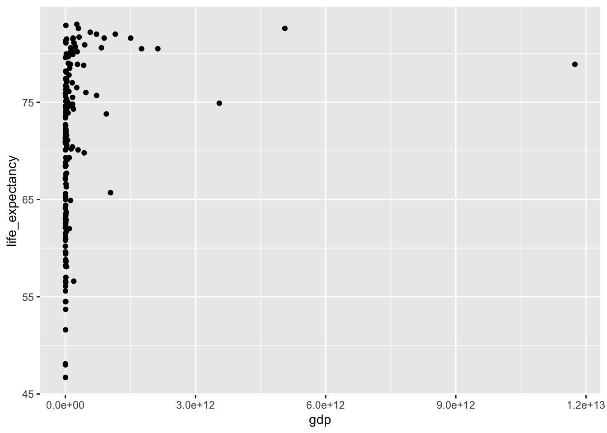

gapminder.Rmd
Wendy Erb
2/26/2021
Data
The Gapminder project was pioneered by Hans Rosling, who is famous for describing the prosperity of nations over time through famines, wars and other historic events with this beautiful data visualization in his 2006 TED Talk: The best stats you’ve ever seen.
Install libraries
library(dslabs)
library(tidyverse)## ── Attaching packages ─────────────────────────────────────── tidyverse 1.3.0 ──## ✓ ggplot2 3.3.3 ✓ purrr 0.3.4
## ✓ tibble 3.0.6 ✓ dplyr 1.0.3
## ✓ tidyr 1.1.2 ✓ stringr 1.4.0
## ✓ readr 1.4.0 ✓ forcats 0.5.1## ── Conflicts ────────────────────────────────────────── tidyverse_conflicts() ──
## x dplyr::filter() masks stats::filter()
## x dplyr::lag() masks stats::lag()View data
view(gapminder)Life expectancy
Add some text and code chunks to plot patterns in the life_expectancy variable. Some ideas to explore: What is the distribution of values (show e.g. in a histogram, a density plot, or boxplot (or all three!)) and does that vary based on continent?
## Warning: Removed 17 rows containing missing values (geom_point).

 
How does life expectancy relate to infant mortality rates, fertility, population size, or GDP? How many variables can you display on the same plot and is the most effective or visually appealing way to display the patterns?
## `geom_smooth()` using method = 'loess' and formula 'y ~ x'## Warning: Removed 7 rows containing non-finite values (stat_smooth).## Warning: Removed 7 rows containing missing values (geom_point).
Fertility
After you’ve done some exploration of life expectancy, move on to add some plots and text under your Fertility header.
 
Infant mortality
## Warning: Removed 17 rows containing missing values (geom_point).
Note that the echo = FALSE parameter was added to the code chunk to prevent printing of the R code that generated the plot.